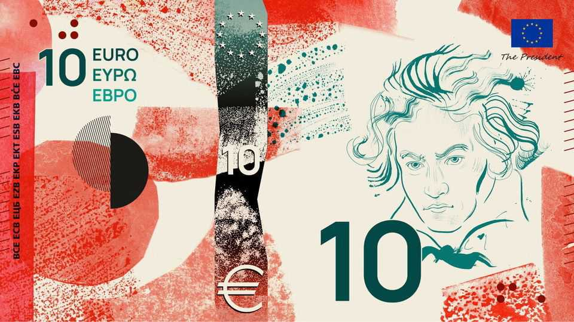
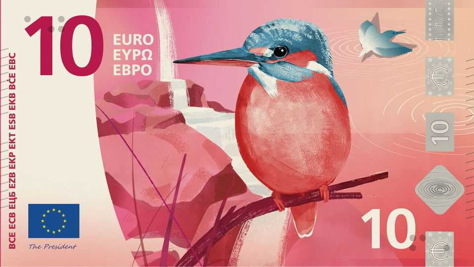
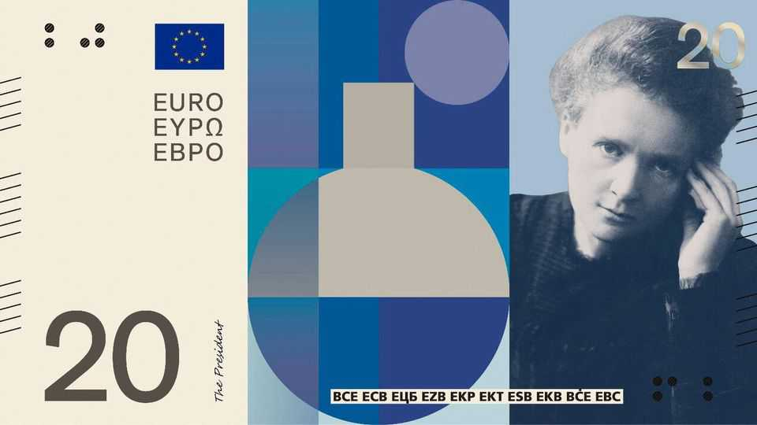

How to design paper money that represents Europe
The euro gets a makeover

Jul 30th 2026
In the eyes of many of its citizens, the European Union is more than a technocratic bloc. Besides Europe’s unity, it symbolises a shared culture and way of life. In the eyes of the euro area’s leaders, an upgrade of its banknotes—used by 21 of the EU’s 27 member states, and more than 20 years old—is a chance to show confidence in the continent.
The original notes, issued in 2002 and given a facelift in 2013, display imaginary bridges, doorways and windows—intended to reflect Europe’s openness and connectedness, but also to avoid rubbing any country up the wrong way. Each denomination shows a European architectural style, from Romanesque to rococo. But they were a dull, soulless choice. The novelty of the euro provided most of the excitement.

The European Central Bank and its classical-music-loving president, Christine Lagarde, want the new notes to represent more. The bank has narrowed the field to two thematic options. The first is to charm users with beautiful birds and rivers on the front of the notes, while hiding buildings hardly anyone will recognise—the EU’s principal edifices, including the ECB tower—on the reverse.
The other is a more confident attempt to show off European culture. On the front are great scientists and artists, such as Maria Sklodowska Curie, who won Nobel prizes in physics and chemistry, or Ludwig van Beethoven, whose final symphony concludes with “Ode to Joy”, the EU’s anthem. The reverse shows everyday spheres of culture, such as choirs, libraries or city squares (though these are hardly peculiar to Europe).

Bravely, the ECB has asked for public feedback on ten sets of mostly well-crafted designs. On social media Europeans are taking the opportunity to provide their own images of what is truly European: disused barriers at borders; an open plastic bottle with an attached cap; two Italian DJs on a balcony, oblivious to the world’s troubles, making music while smoking and drinking Campari. Another idea is to print an out-of-office reply on notes, saying “Back in September”. The Economist’s favourite, though, is for a note bearing half a dozen famous faces: Britain’s prime ministers since Brexit. ■